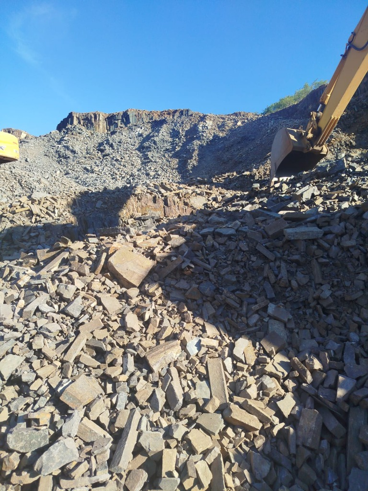

Base para estradas e acessos
Firmeza e resistência ao tráfego de veículos pesados, especialmente em estradas de terra e acessos rurais.
A base sólida que a sua obra precisa.
Rocha natural de alta resistência, em estado bruto — feita para sustentar, drenar e estabilizar. Entrega ágil com frota própria.

A pedra rachão é uma rocha natural em estado bruto, obtida sem passar pelo processo de britagem. Isso significa que ela mantém suas dimensões originais maiores, o que a torna extremamente resistente e ideal para obras que exigem sustentação, firmeza e durabilidade a longo prazo.
Por ser um material compacto e de alta densidade, a pedra rachão distribui cargas de forma eficiente, evita erosão e proporciona estabilidade estrutural mesmo em terrenos difíceis ou com alta umidade.
Firmeza e resistência ao tráfego de veículos pesados, especialmente em estradas de terra e acessos rurais.
Camada filtrante em sistemas de drenagem pluvial e subterrânea, permitindo o escoamento eficiente da água.
Ideal para estabilizar terrenos inclinados, evitando deslizamentos e erosão em áreas de risco.
Base sob fundações para melhorar a capacidade de carga do solo e garantir a integridade estrutural.
Excelente solução para terrenos instáveis, úmidos ou com baixa capacidade de suporte.
Presente em obras públicas, municipais e privadas que exigem material robusto e de procedência confiável.
Suporta grandes cargas sem deformação.
Mantém suas propriedades ao longo do tempo.
Solução eficiente para grandes volumes.
Sem processos químicos ou artificiais.
Material selecionado e de qualidade comprovada.
Atendemos desde pequenas obras até grandes projetos.
Fale com nossa equipe e informe as necessidades da sua obra.
Retorno rápido com proposta personalizada para o seu projeto.
Definimos juntos a melhor data para a entrega.
Material entregue no local da obra com segurança e agilidade.
Pequena contenção ou grande infraestrutura — temos a base certa para o seu projeto.